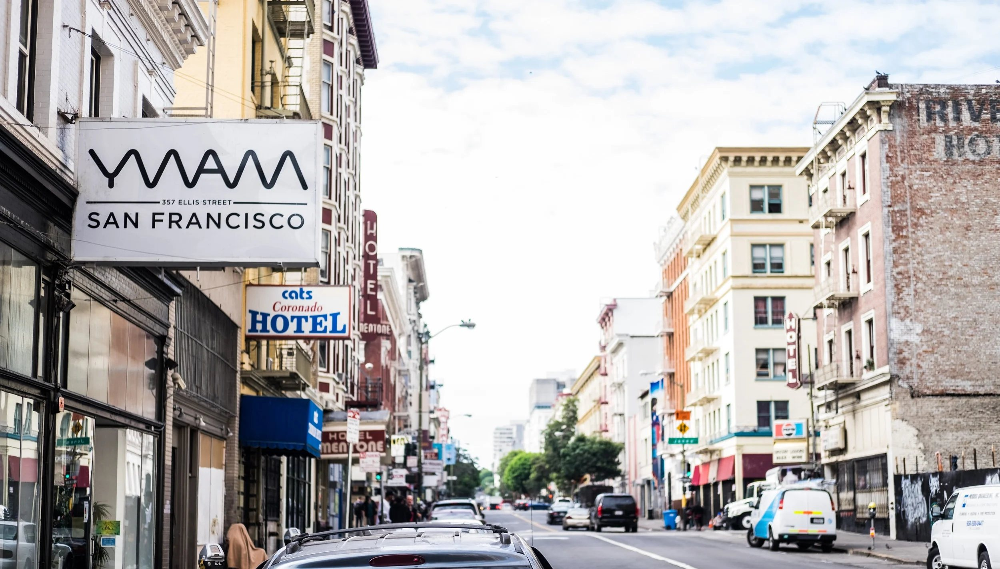
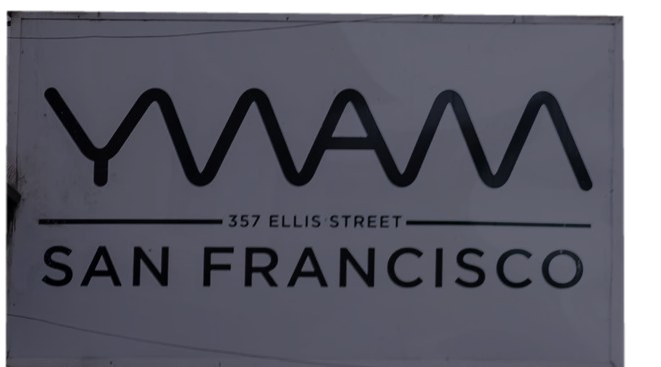
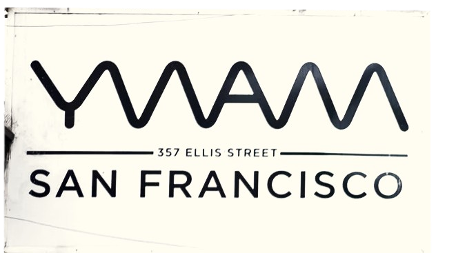
MidnightNoonMidnight
We believe
People can change. Neighborhoods can heal. Love can make a difference.
The love of Jesus is meant to be lived. In the Tenderloin, we learn His way by living it: loving our neighbors, meeting practical needs, and building relationships that bring lasting change.
Next DTS begins Jan 18, 2027. 15 spots.
Neighborhood engagement
A place of peace, right in the middle of it.
Not an escape from the chaos, but a steady, welcoming presence inside it.
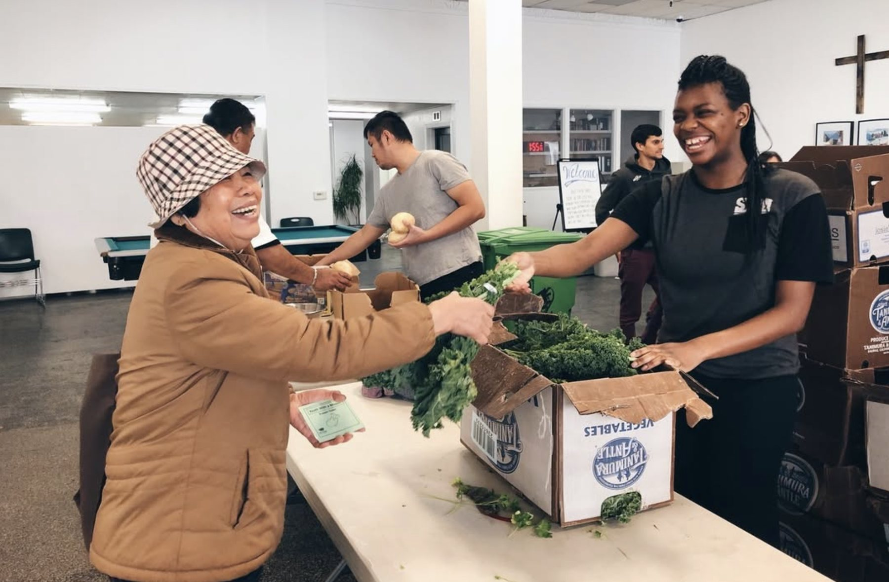
ThursdaysFood PantryFresh groceries for 300+ neighbors every week, with the SF-Marin Food Bank.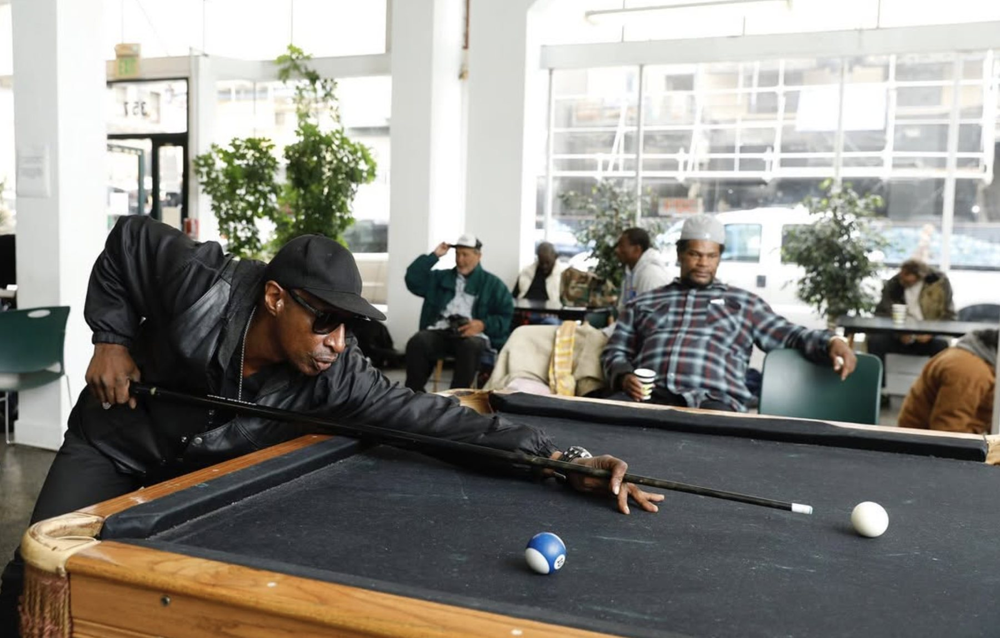
Mon · Tue · Wed · FriThe Ellis RoomA safe place to land: coffee, conversation, donations and community.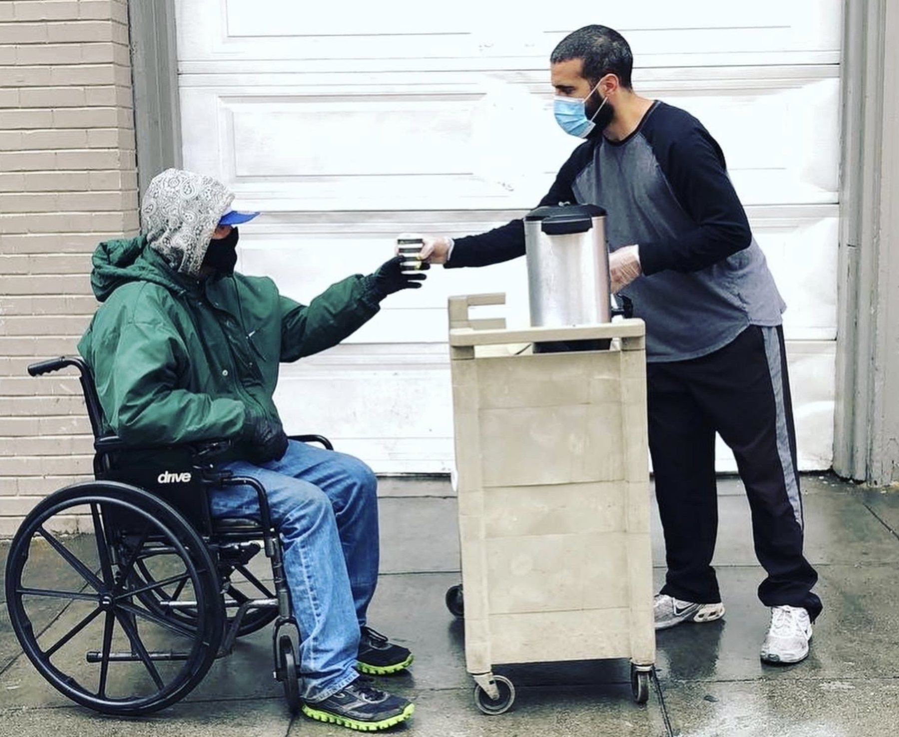
Friday nightsHot ChocolateA warm cup on a cold corner, and a conversation that follows.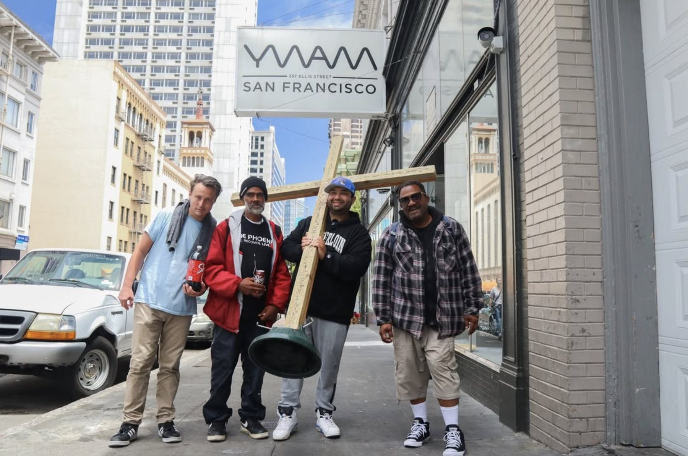
Sunday morningsPop-Up ChurchWorship, a simple message and prayer, right on the sidewalk.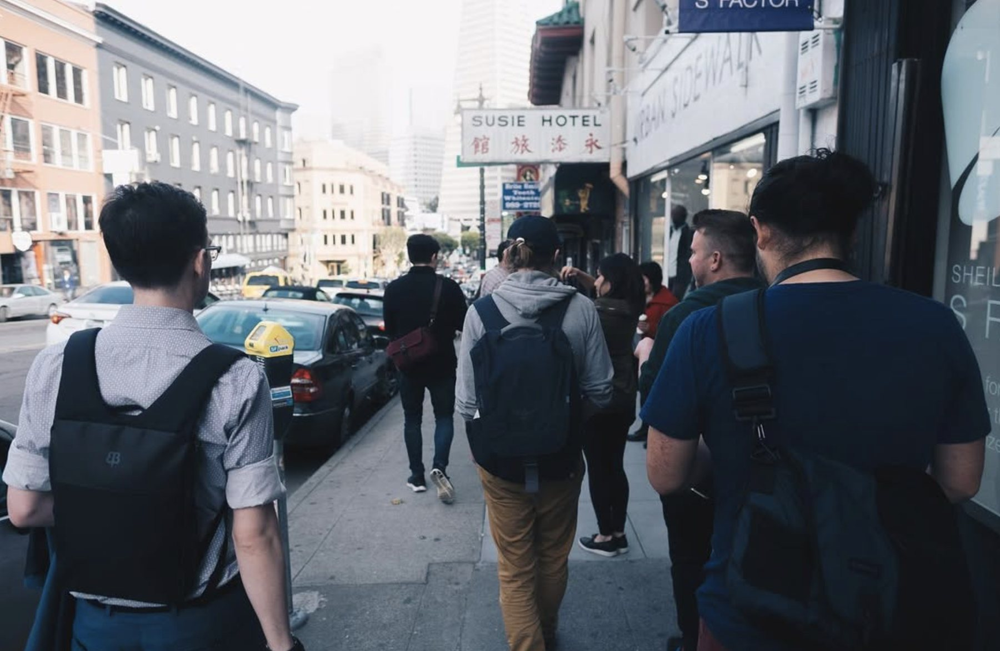
2nd & 4th SundaysTenderloin ConnectVisiting neighbors in SRO buildings who are facing deep isolation.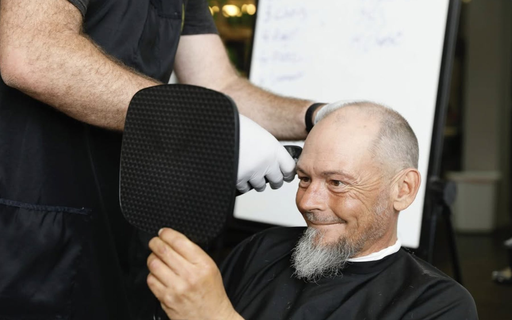
Mon · Tue · WedShowers & HaircutsHot showers, hygiene supplies and free haircuts, no questions asked.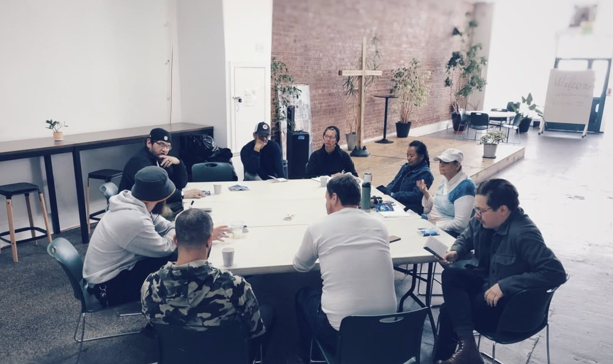
MorningsBible StudySpace to explore faith together, housed or unhoused.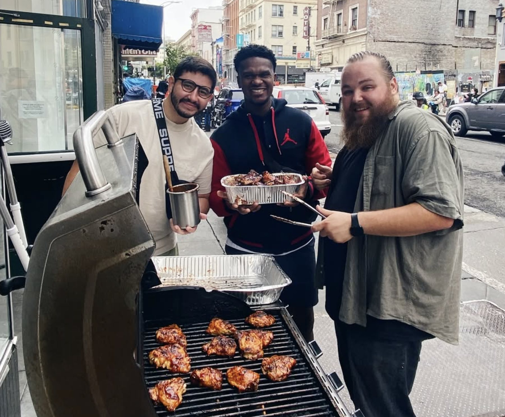
HolidaysCommunity MealsOne long table. 209 neighbors at Christmas lunch.Follow God’s example, therefore, as dearly loved children and walk in the way of love, just as Christ loved us and gave himself up for us as a fragrant offering and sacrifice to God.Ephesians 5:1–2 · NIV